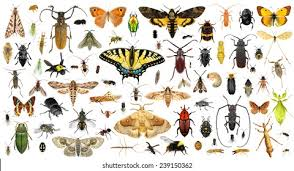
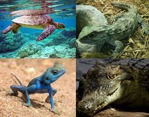
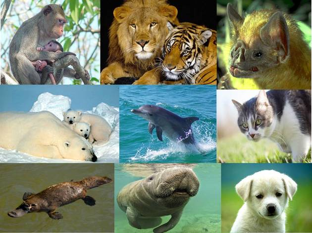
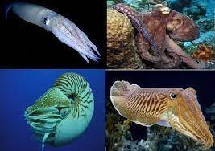

Los animales artrópodos son animales invertebrados que constituyen el filo más numeroso y diverso dentro de los 29 filos que conforman el Reino Animalia o Animal.Los artrópodos presentan muchos rasgos comunes que permiten agrupar a diversos animales invertebrados que a simple vista pueden parecer muy diferentes entre sí, pero que en realidad todos comparten una serie de características anatómicas y funcionales que permiten agruparlos dentro del filo Artrópodos.

Los reptiles son animales vertebrados que se desplazan reptando mientras arrastran el vientre por el suelo. Este tipo de desplazamiento es debido a que, en su origen, habitaban medios acuáticos, pero tras años de evolución se han adaptado por completo a la vida terrestre. Así, también hay reptiles que tienen patas erguidas y se desplazan andando pero siempre con el vientre muy cerca del suelo. Este origen explicaría también su necesidad de habitar zonas con presencia de agua cercana. Normalmente habitan en lugares con tierra y agua (como lagos, pantanos, riberas, etc.).

Los mamíferos son animales vertebrados de sangre caliente, que se caracterizan por tener glándulas mamarias, con las que producen leche para alimentar a sus crías. Existen unas 5.486 especies de mamíferos y, según la clasificación de los mamíferos, se dividen en placentarios (la mayoría), los marsupiales y los monotremas. Todos los mamíferos descienden de un antepasado común del Triásico, remontándose a los 200 millones de años. Debido a esto, existe toda una serie de características de los mamíferos comunes

Los moluscos se caracterizan por ser triblásticos, celomados, protostomados y contar con, al menos inicialmente, simetría bilateral. Este grupo tiene representantes tanto acuáticos (marinos y dulceacuícolas) como terrestres. En general, los moluscos presentan un cuerpo dividido en tres zonas: La cabeza.El pie.La masa visceral. Su pared dorsal forma un par de repliegues que caen a ambos lados del cuerpo y constituyen el manto, que tiene función protectora y delimita un espacio conocido como cavidad paleal, donde se alojan las branquias o pulmones del molusco. Existe una serie de elementos funcionales y estructurales comunes a todo el filo, aunque algunos representantes puedan presentarlos más o menos modificados.